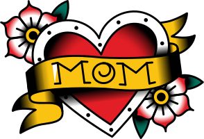

Every tattoo or ‘Flash’ is a personal statement but there are certain common meanings.
Here's a few favorites:

Heart
A sailor staring down a long stint at sea- including the possibility of not returning home-often wanted a heart tattoo to keep his loved ones close. Sometimes these hearts were just images. Other timehs, they read "Mom" or featured the name of a special girl. Hearts still remain one of the most popular tattoos for both sailors and civilians.

Pin Up Girl
Pin-up girls represent the ideal and extremes of femininity — from maidenly perfection to vixen-ish temptation. The woman inked on a sailor's arm would be the only feminine form he would see for months. Applying his bold, refined style to the pin-up, Sailor Jerry created what could be argued as the world's most iconic pin-up tattoos.
Eagle
Eagles are symbols for America, representing honor, prowess and intelligence. For Sailor Jerry, as a patriot who was acutely aware of (and vocal about) the shortcomings of his country, the Eagle was a symbol of his idealized America. A country that stands with the courage of its convictions and backs down for no one. Jerry's eagle tattoos are fierce and iconic, often depicted in association with the flag.
Skull
A tattoo is one of the few indelible decisions we make in life, representing a commitment to your dying day — this is one reason skulls and death themes are big. The other is that tattoos, in the ancient world and in Jerry's day, were often the marks of warriors, mercenaries and adventurers – people whose life choices represented coming to terms with death (“Death Or Dishonor”) or perversely inoculating one's self against it (“Rats Get Fat While Brave Men Die”).